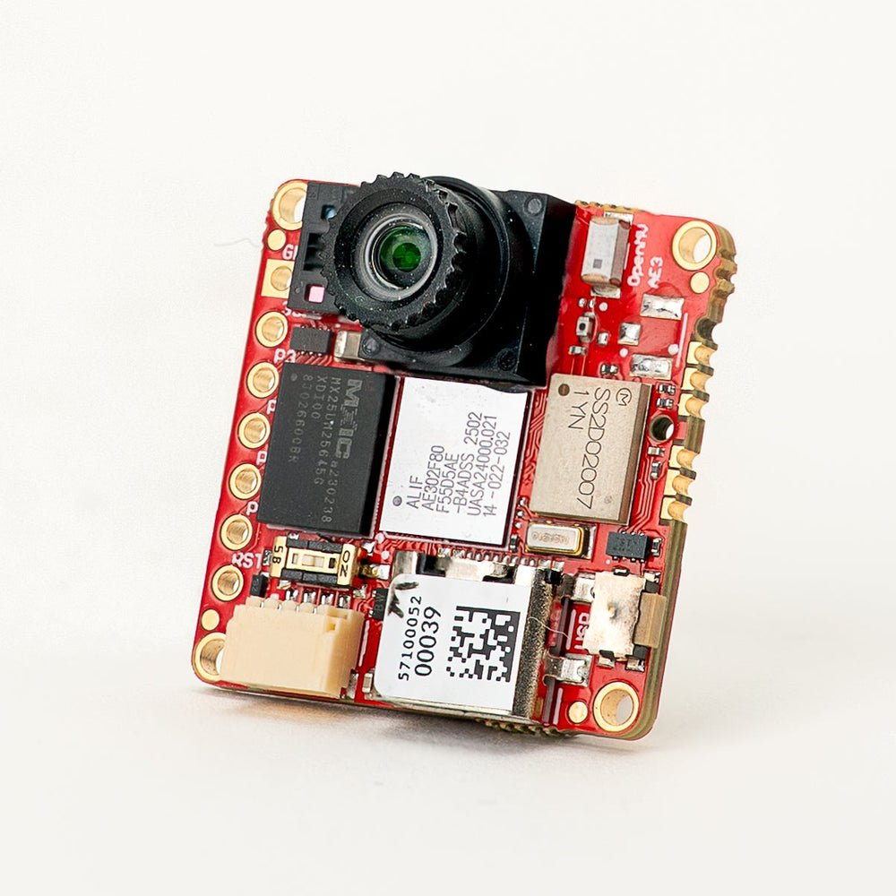
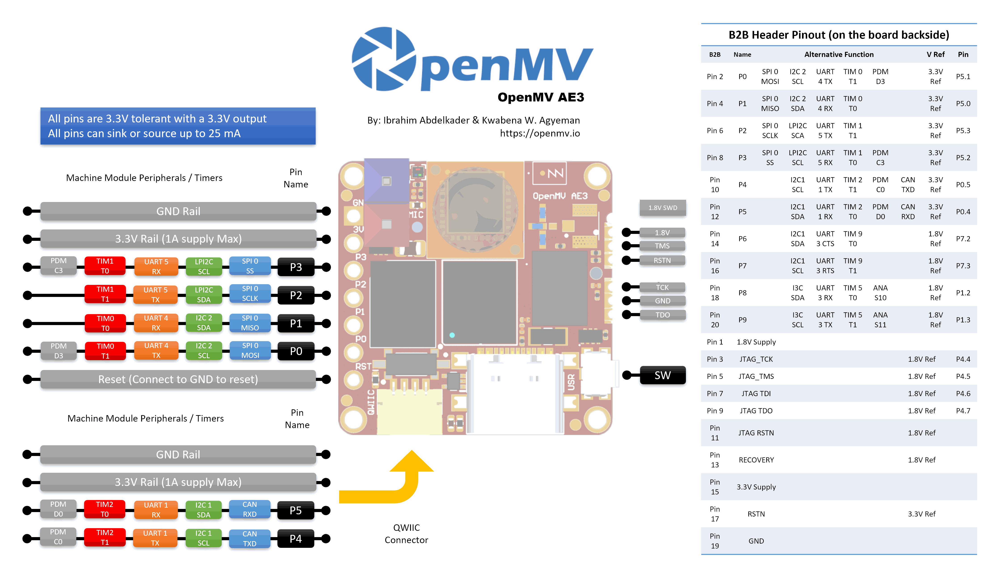

OpenMV AE3¶
Die OpenMV AE3 basiert auf dem Alif Ensemble E3 — einem Dual-ARM-Cortex-M55-SoC (400-MHz-HP-Kern + 160-MHz-HE-Kern) mit zwei On-Chip-NPUs (400 MHz / 204 GOPS HP-NPU + 160 MHz / 46 GOPS HE-NPU). Die Platine kombiniert die NPUs mit dem PAG7936-1-MP-Global-Shutter-Sensor, High-Speed-USB-C, Wi-Fi, Bluetooth 5.1, einer LSM6DSM-IMU, einem Mikrofon und einem 8×8-VL53L8CX-Time-of-Flight-Entfernungsmesser, alles auf einer 30 × 30 mm großen Platine.
{kind=link}

Vollständiges Datenblatt, Fotos und Abmessungen finden Sie auf der OpenMV AE3-Produktseite.
Höhepunkte¶
Alif Ensemble E3 — Dual-ARM-Cortex-M55 mit Helium-128-Bit-SIMD, 400-MHz-HP-Kern + 160-MHz-HE-Kern (~640 / ~256 DMIPS, CoreMark 1748 / 752).
Zwei NPUs: 400 MHz / 204 GOPS HP-NPU + 160 MHz / 46 GOPS HE-NPU für AI/ML — führt YOLO-Objekterkennung parallel zu anderen Workloads aus.
Hardware-2D-GPU zur Skalierung.
13,5 MB internes SRAM plus 5,5 MB On-Chip-MRAM und 32 MB externer Octal-Flash (100 MHz 8-Bit-DDR, 200 MB/s Lesen).
4 KB Backup-RAM mit der On-Chip-RTC.
PAG7936-1-MP-Farb-Global-Shutter-Sensor.
Onboard-IMU (LSM6DSM-Beschleunigungssensor + Gyroskop), Mikrofon und VL53L8CX-8×8-Time-of-Flight-Sensor (bis zu 4 m).
High-Speed-USB-C (480 Mb/s) mit EMI-Filterung und TVS-Schutz, Wi-Fi a/b/g/n + Bluetooth 5.1 (Chip-Antenne oder U.FL-Option).
10 Benutzer-I/O-Pins — P0–P3 an den seitlichen Headern, P4–P5 am Qwiic-Anschluss und P6–P9 am B2B-Header auf der Rückseite. Zusätzliche Debug- und Recovery-Leitungen sind ebenfalls zum B2B-Header geführt.
Alle Pins 3,3 V Ausgang / 3,3 V tolerant, 25 mA pro Pin, interrupt-fähig. ADC-Eingänge sind auf 1,8 V referenziert.
Benutzer-RGB-LED, Benutzertaste, Recovery-Schalter, Qwiic-Anschluss.
80 µA Deep Sleep bei 3,3 V (24 mA im Leerlauf, 50–60 mA aktiv).
Warnung
Die I/O-Pins der AE3 sind nicht 5 V tolerant. Schließen Sie das Gerät nicht direkt an einen 5-V-MCU wie den Arduino Mega an — verwenden Sie für jedes 5-V-Signal einen Pegelwandler.
Pinbelegung¶
{kind=link}

Pin-Referenz¶
Die AE3 stellt 10 Benutzerpins an den seitlichen Headern bereit (P0–P9). Zusätzliche Signale — einschließlich JTAG und der Recovery-Leitung — sind zu einem B2B-Header (Board-to-Board) auf der Rückseite der Platine geführt, für Shields und Carrier-Boards.
Pin-Name |
Referenz |
Funktion |
|---|---|---|
P0 |
3,3 V |
SPI0 MOSI / I2C2 SCL / UART4 TX / TIM0 T1 / PDM D3 |
P1 |
3,3 V |
SPI0 MISO / I2C2 SDA / UART4 RX / TIM0 T0 |
P2 |
3,3 V |
SPI0 SCLK / LPI2C SDA / UART5 TX / TIM1 T1 |
P3 |
3,3 V |
SPI0 SS / LPI2C SCL / UART5 RX / TIM1 T0 / PDM C3 |
P4 |
3,3 V |
I2C1 SCL / UART1 TX / TIM2 T1 / PDM C0 / CAN TX |
P5 |
3,3 V |
I2C1 SDA / UART1 RX / TIM2 T0 / PDM D0 / CAN RX |
P6 |
1,8 V |
I2C1 SDA / UART3 CTS / TIM9 T0 (nur B2B) |
P7 |
1,8 V |
I2C1 SCL / UART3 RTS / TIM9 T1 (nur B2B) |
P8 |
1,8 V |
I3C SDA / UART3 RX / TIM5 T0 / ADC ch S10 (nur B2B) |
P9 |
1,8 V |
I3C SCL / UART3 TX / TIM5 T1 / ADC ch S11 (nur B2B) |
P10 |
1,8 V |
GPIO / JTAG TCK (nur B2B) |
P11 |
1,8 V |
GPIO / JTAG TDO (nur B2B) |
P13 |
1,8 V |
GPIO / JTAG TMS (nur B2B) |
P14 |
1,8 V |
GPIO / JTAG TDI (nur B2B) |
RESET |
3,3 V |
auf GND ziehen, um die Platine zurückzusetzen |
SW |
3,3 V |
Benutzertaste (active low) |
LED_RED |
3,3 V |
RGB-LED roter Kanal (active low) |
LED_GREEN |
3,3 V |
RGB-LED grüner Kanal (active low) |
LED_BLUE |
3,3 V |
RGB-LED blauer Kanal (active low) |
Bemerkung
P0–P5 befinden sich an den seitlichen Headern (auf 3,3 V referenziert); P6–P9 sind nur am B2B-Header auf der Rückseite der Platine zugänglich und auf 1,8 V referenziert. Das Anlegen von 3,3 V an einen auf 1,8 V referenzierten Pin beschädigt den SoC — stellen Sie sicher, dass jedes an den B2B-Header angeschlossene Signal bei 1,8 V liegt.
Stromversorgungspins¶
3.3V — die Hauptversorgungsschiene der AE3. Dieselbe 3,3-V-Schiene ist an den Lötpads des GPIO-Headers, am Qwiic-Anschluss und am B2B-Header auf der Rückseite der Platine verfügbar.
1.8V — am B2B-Header nur als Ausgang verfügbar. Verwenden Sie sie, um 1,8-V-Logik-Peripheriegeräte auf einem B2B-Carrier zu versorgen; speisen Sie sie nicht von außerhalb der Platine ein.
GND — gemeinsame Masse.
Die AE3 hat keinen VIN-Pin und kein LiPo-Ladegerät. Sie kann über einen von drei Pfaden versorgt werden:
USB-C — der Onboard-Regler senkt die 5 V vom USB auf 3,3 V und speist diese in die 3,3-V-Schiene ein.
Qwiic-Anschluss — speisen Sie eine geregelte 3,3-V-Versorgung in den Qwiic-Header ein, um die Platine von einem Qwiic-Modul aus zu versorgen.
GPIO-Header / B2B-3,3-V-Pads — speisen Sie eine geregelte 3,3-V-Versorgung in eines der 3,3-V-Pads am I/O-Header oder am B2B-Anschluss ein.
Der USB-Regler speist die Schiene über eine ideale Diode, sodass externe 3,3-V-Versorgungen auf der Qwiic-/GPIO-/B2B-Seite die Platine versorgen können, selbst wenn USB noch angeschlossen ist, ohne den USB-Regler rückwärts zu treiben.
Tipp
Verwenden Sie den Akkulaufzeit-Schätzer, um zu modellieren, wie lange die AE3 bei einem gegebenen Aktiv-/Deep-Sleep-Tastverhältnis mit einem Akku läuft.
Recovery- und Debug-Pins¶
RESET — auf GND ziehen, um die Platine zurückzusetzen. Beim Loslassen startet der SoC normal hoch.
Es gibt einen Recovery-Schalter auf der Vorderseite (Kameraseite) der Platine, in der unteren linken Ecke. Wenn aktiviert, zwingt er die SE-UART der AE3 über USB heraus, sodass OpenMV IDE den Onboard-Bootloader neu flashen kann. Derselbe Recovery-Modus kann aus der Ferne ausgelöst werden, indem der RECOVERY-Pin am B2B-Anschluss auf Low gezogen wird.
Die AE3 unterstützt sowohl SWD- als auch vollständiges JTAG-Debugging:
Der 1,8-V-SWD-Header an der Seite der Platine ist für ein Tag-Connect ECV3-06-CTX-Kabel und führt die vier SWD-Signale (TCK / TMS / TDO / RSTN) plus GND heraus.
Der B2B-Header auf der Rückseite der Platine stellt dieselben Debug-Pins bereit (P10 = TCK, P11 = TDO, P13 = TMS, P14 = TDI) plus das System-RSTN und ein separates JTAG RSTN. Diese Pins können entweder für SWD (TCK + TMS) oder vollständiges JTAG verwendet werden; die JTAG-RSTN-Leitung wird nur im vollständigen JTAG-Modus benötigt.
Alle Debug-Signale sind auf 1,8 V referenziert — stellen Sie sicher, dass Ihr Debug-Adapter vor dem Anschließen für 1,8-V-Logik konfiguriert ist.
Onboard-Peripheriegeräte¶
LEDs¶
Die AE3 hat eine einzelne Benutzer-RGB-LED, die per Software über machine.LED steuerbar ist:
from machine import LED
LED("LED_RED").on()
LED("LED_GREEN").on()
LED("LED_BLUE").on()
Kamerasensor¶
Der PAG7936 wird über das csi — Kamerasensoren-Modul angesteuert:
import csi
cam = csi.CSI()
cam.reset()
cam.pixformat(csi.RGB565)
cam.framesize(csi.HD) # 1280×800
cam.snapshot(time=2000) # let auto‑exposure settle
while True:
img = cam.snapshot()
Der PAG7936 unterstützt den getriggerten Modus — die Pixelintegration richtet sich exakt nach jedem csi.CSI.snapshot-Aufruf statt nach dem frei laufenden Frame-Takt, nützlich, um die Aufnahme mit einem externen Ereignis oder einem anderen Sensor zu synchronisieren. Aktivieren Sie ihn über csi.CSI.ioctl mit csi.IOCTL_SET_TRIGGERED_MODE. Die Bildrate sinkt auf etwa die Hälfte des frei laufenden Modus, weil das Auslesen nicht mehr mit der Integration des nächsten Einzelbilds gepipelinet wird:
cam.ioctl(csi.IOCTL_SET_TRIGGERED_MODE, True)
NPU¶
Die zwei On-Chip-NPUs der AE3 (400 MHz / 204 GOPS HP-NPU + 160 MHz / 46 GOPS HE-NPU) werden über das ml — Maschinelles Lernen-Modul bereitgestellt. Modelle, die auf dem schreibgeschützten /rom-Dateisystem gespeichert sind, werden direkt aus dem Flash geladen, ohne ins RAM kopiert zu werden, sodass selbst große Detektoren bequem neben dem Live-Framebuffer Platz finden. Führen Sie einen YOLOv8-Detektor auf jedem Einzelbild aus und zeichnen Sie die Vorhersagen über das Live-Bild:
import csi
import time
import ml
from ml.postprocessing.ultralytics import YoloV8
# Initialize the sensor.
csi0 = csi.CSI()
csi0.reset()
csi0.pixformat(csi.RGB565)
csi0.framesize(csi.VGA)
# Load YOLO V8 model from ROM FS.
model = ml.Model("/rom/yolov8n_192.tflite", postprocess=YoloV8(threshold=0.4))
print(model)
# Visualization parameters.
n = len(model.labels)
model_class_colors = [
(int(255 * i // n), int(255 * (n - i - 1) // n), 255)
for i in range(n)
]
clock = time.clock()
while True:
clock.tick()
img = csi0.snapshot()
# boxes is a list of list per class of ((x, y, w, h), score) tuples
boxes = model.predict([img])
# Draw bounding boxes around the detected objects
for i, class_detections in enumerate(boxes):
rects = [r for r, score in class_detections]
labels = [model.labels[i] for j in range(len(rects))]
colors = [model_class_colors[i] for j in range(len(rects))]
ml.utils.draw_predictions(img, rects, labels, colors, format=None)
print(clock.fps(), "fps")
HE-Kern¶
Die AE3 vereint zwei Cortex-M55-Kerne in einem MCU: den High-Performance-Kern (HP), der die Haupt-MicroPython-Instanz, die Kamera, die HP-NPU, USB und so weiter ausführt; und den High-Efficiency-Kern (HE), der bei viel geringerer Leistung läuft und in eine eigene kleine MicroPython-Instanz bootet. Beide Kerne teilen sich einen Open-AMP-/RPMsg-Nachrichtenbus, sodass der HP-Kern Python-Funktionen an den HE-Kern verteilen, Ergebnisse zurückbekommen und die beiden Hälften entkoppelt halten kann.
Der einfachste Einstiegspunkt ist der @openamp.async_remote-Decorator. Er marshallt eine Python-Funktion, schickt sie an den HE-Kern, und der HE-Kern führt sie als asyncio-Task aus. Nach dem Registrieren von Tasks instanziieren Sie openamp.RemoteProc mit der Flash-Adresse der HE-Firmware und rufen rproc.start() auf, um den zweiten Kern zu booten. Ohne Callback wird die print()-Ausgabe der dekorierten Funktion über den Standard-Endpunkt an den stdout des HP-Kerns weitergeleitet — praktisch für ein „Hello World“:
import time
import openamp
@openamp.async_remote
async def task1(ept):
import asyncio
while True:
print("Hello from the HE core!")
await asyncio.sleep(1)
# Boot the HE core. This runs the registered tasks.
rproc = openamp.RemoteProc(0x80320000)
rproc.start()
while True:
print("Hello from the HP core!")
time.sleep(1)
Für bidirektionales Messaging übergeben Sie dem Decorator einen Callback. Der Callback läuft auf dem HP-Kern, immer wenn der HE-Task ept.send() aufruft:
import time
import openamp
def task_callback(src_addr, data):
print("HP received:", data.decode())
@openamp.async_remote(task_callback)
async def task1(ept):
import asyncio
count = 0
while True:
ept.send(f"count = {count}")
count += 1
await asyncio.sleep(1)
rproc = openamp.RemoteProc(0x80320000)
rproc.start()
while True:
time.sleep(1)
Der HE-Kern hat seine eigene HE-NPU (160 MHz, 46 GOPS), sodass er ein zweites ML-Modell parallel zu dem ausführen kann, womit die HP-NPU des HP-Kerns gerade beschäftigt ist. Eine sinnvolle Aufteilung besteht darin, ein kleines, dauerhaft aktives Trigger-/Klassifizierungsmodell auf die HE-Seite zu legen und den HP-Kern nur reagieren zu lassen, wenn etwas Interessantes markiert wird — Keyword-Spotting vom Onboard-Mikrofon passt gut, weil es kontinuierlich und bandbreitenarm ist und der HE-Kern bei viel geringerer Leistung als HP bleibt. Der eingefrorene ml.apps.MicroSpeech-Helfer erkennt „Yes“ und „No“ von Haus aus — sprechen Sie die Wörter laut und deutlich in das Onboard-Mikrofon, um die Erkennung auszulösen:
import time
import openamp
def task_callback(src_addr, data):
print("Heard:", data.decode())
@openamp.async_remote(task_callback)
async def task1(ept):
from ml.apps import MicroSpeech
speech = MicroSpeech(gain_db=24)
while True:
label, scores = speech.listen(timeout=0, threshold=0.70)
if label:
ept.send(label)
rproc = openamp.RemoteProc(0x80320000)
rproc.start()
while True:
time.sleep(1)
Für eine reichhaltigere Aufteilung führen Sie BlazeFace auf der HP-NPU aus, während der HE-Kern im Hintergrund das Keyword-Spotting übernimmt — die HP-Schleife blendet das zuletzt gehörte Keyword über das Kamera-Einzelbild ein:
import csi
import time
import openamp
import ml
from ml.postprocessing.mediapipe import BlazeFace
label = None
label_ticks = 0
LABEL_HOLD_MS = 2000
def task_callback(src_addr, data):
global label, label_ticks
label = data.decode()
label_ticks = time.ticks_ms()
@openamp.async_remote(task_callback)
async def task1(ept):
from ml.apps import MicroSpeech
speech = MicroSpeech(gain_db=24)
while True:
l, scores = speech.listen(timeout=0, threshold=0.70)
if l:
ept.send(l)
# Start the HE core before initializing the camera on the HP core.
rproc = openamp.RemoteProc(0x80320000)
rproc.start()
csi0 = csi.CSI()
csi0.reset()
csi0.pixformat(csi.RGB565)
csi0.framesize(csi.VGA)
csi0.window((400, 400))
model = ml.Model("/rom/blazeface_front_128.tflite",
postprocess=BlazeFace(threshold=0.4))
clock = time.clock()
while True:
clock.tick()
img = csi0.snapshot()
for r, score, keypoints in model.predict([img]):
ml.utils.draw_predictions(img, [r], ("face",),
((0, 0, 255),), format=None)
ml.utils.draw_keypoints(img, keypoints, color=(255, 0, 0))
if label is not None:
if time.ticks_diff(time.ticks_ms(), label_ticks) < LABEL_HOLD_MS:
img.draw_string((4, 4), f"Heard: {label}",
color=(255, 0, 0), scale=2)
else:
label = None
print(clock.fps(), "fps")
Der HE-Kern eignet sich gut für dauerhaft aktive oder niederfrequente Workloads, die nicht mit der Kamera-/NPU-Pipeline auf der HP-Seite konkurrieren sollen — kleine ML-Inferenz, leichtgewichtige DSP auf Mikrofon- oder IMU-Daten und ähnliche Hintergrundaufgaben.
Einige Einschränkungen, die zu beachten sind:
Beschränken Sie sich auf das Mikrofon und die IMU, wenn Sie Peripheriegeräte vom HE-Kern aus ansteuern — dafür ist die HE-Seite ausgelegt. Jedes Peripheriegerät kann immer nur von einem Kern besessen werden, wählen Sie also HP oder HE dafür und bleiben Sie für die Lebensdauer des Skripts dabei.
Jeder
@openamp.async_remote-Task-Body muss in unter 500 Byte mpy-Bytecode marshallen — halten Sie die Funktion klein und lagern Sie schwerere Logik in separate Bibliotheksmodule aus, die in die Firmware eingefroren werden.Importe innerhalb der verteilten Funktion sehen nur Module, die auf dem Dateisystem des HE-Kerns existieren. Der HE-Kern hat sein eigenes
/rom-ROMFS — getrennt vom/romdes HP-Kerns — sodass Module und ML-Modelle, die Sie auf HE verfügbar haben möchten, in das HE-seitige ROMFS-Image gebacken werden müssen, nicht in das HP-Image.
Mikrofon¶
Das Onboard-Mikrofon wird über audio — Audio-Modul erfasst. Jeder Puffer kommt als vorzeichenbehaftetes 16-Bit-PCM-bytearray an, was es trivial macht, ihn für schnelle DSP in ulab/numpy einzuspeisen. Ein einfacher Lautstärkedetektor — gibt aus, wann immer die RMS-Lautstärke einen Schwellenwert überschreitet:
import audio
from ulab import numpy as np
def loudness(pcmbuf):
samples = np.array(np.frombuffer(pcmbuf, dtype=np.int16), dtype=np.float)
rms = np.sqrt(np.mean(samples ** 2))
if rms > 10000:
print("Loud!", int(rms))
audio.init(channels=1, frequency=16000, gain_db=24)
audio.start_streaming(loudness)
while True:
pass
IMU¶
Der Onboard-LSM6DSM-Beschleunigungssensor + Gyroskop wird über imu — IMU-Sensor bereitgestellt:
import imu
import time
while True:
print(imu.acceleration_mg()) # (x, y, z) in milli‑g
print(imu.angular_rate_mdps()) # (x, y, z) in milli‑deg/s
time.sleep_ms(100)
Time-of-Flight-Sensor¶
Die AE3 trägt einen VL53L8CX-8×8-Multizonen-Time-of-Flight-Sensor, der bis zu 64 Distanzmessungen pro Einzelbild zurückgibt, mit einer maximalen Reichweite von ~4 m. Er wird über das tof — Time-of-Flight-Sensortreiber-Modul bereitgestellt — rufen Sie tof.init() auf, um den Sensor zu starten, und tof.read_depth(), um ein Tiefen-Einzelbild als flache Liste von Millimeter-Messungen (eine pro Zone) zu erfassen:
import tof
tof.init()
while True:
depth, depth_min, depth_max = tof.read_depth()
print("min:", depth_min, "mm max:", depth_max, "mm")
Das Tiefen-Array kann auch über ein Farb-Einzelbild des Hauptsensors gezeichnet werden — tof.draw_depth() malt es auf ein vorhandenes image.Image, während tof.snapshot() ein frisch gerendertes Tiefenbild zurückgibt:
import image
import tof
import csi
# Bring up the VL53L8CX time-of-flight sensor.
tof.init()
# Configure the main camera at VGA RGB565.
cam = csi.CSI()
cam.reset()
cam.pixformat(csi.RGB565)
cam.framesize(csi.VGA)
# Off-screen framebuffer used to compose the camera frame and the
# up-scaled depth heat-map side by side before pushing the result
# back to the live preview.
b = image.Image(640, 480, image.RGB565)
while True:
# Grab a colour frame from the main camera.
img = cam.snapshot()
try:
# Capture TOF data [depth map, min distance, max distance].
# vflip / hmirror align the ToF orientation with the camera.
depth, dmin, dmax = tof.read_depth(vflip=True, hmirror=True)
# Zones with no return read back as 0.0 — clamp them to the
# frame's max distance so the colour palette doesn't show
# them as "closest".
for i in range(0, len(depth)):
if depth[i] == 0.0:
depth[i] = dmax
except RuntimeError:
# The sensor occasionally faults on a frame; reset and skip.
tof.reset()
continue
# Draw the camera frame into the left half of the framebuffer,
# scaled to 60% so it leaves room for the depth heat-map on
# the right.
b.draw_image(img, x=0, y=64+8, x_scale=0.6, hint=image.BILINEAR)
# Up-sample the 8x8 depth array 30x with bicubic smoothing and
# blend it into the right half using the depth palette.
# scale=(0, 400) maps 0-400 mm to the full palette range.
tof.draw_depth(b, depth, x=320+64+16, y=64+8, alpha=255,
hint=image.BICUBIC, x_scale=30, y_scale=30,
scale=(0, 400), color_palette=image.PALETTE_DEPTH)
# Copy the composed framebuffer back into the live preview so
# OpenMV IDE shows both panels.
img.set(b)
Wi-Fi¶
Der Onboard-CYW43439 wird über network — Netzwerkkonfiguration als Station-Schnittstelle bereitgestellt. Nach dem Verbinden gibt ipconfig("addr4") das (ip, netmask)-Paar zurück:
import network, time
wlan = network.WLAN(network.STA_IF)
wlan.active(True)
wlan.connect("ssid", "password")
while not wlan.isconnected():
time.sleep(1)
print("Wi‑Fi IP:", wlan.ipconfig("addr4")[0])
Bluetooth¶
Derselbe CYW43439 stellt auch Bluetooth 5.1 bereit. Verwenden Sie aioble — Async BLE für asyncio-freundliches BLE — werben Sie zum Beispiel als Peripheriegerät und warten Sie, bis sich ein Central verbindet:
import asyncio
import aioble
async def run():
while True:
conn = await aioble.advertise(250_000, name="OpenMV-AE3")
print("Connected:", conn.device)
await conn.disconnected()
asyncio.run(run())
Bus-Referenz¶
GPIO¶
Verwenden Sie machine.Pin, um einen der bedruckten Pins zu lesen oder anzusteuern. Ausgänge sind 3,3-V-CMOS und können bis zu 25 mA pro Pin senken/liefern.
from machine import Pin
out = Pin("P0", Pin.OUT)
out.on()
out.off()
out.value(1)
inp = Pin("P1", Pin.IN, Pin.PULL_UP)
print(inp.value())
Jeder Eingangspin kann außerdem bei Flankenwechseln einen Interrupt auslösen:
def handler(pin):
print("triggered:", pin)
Pin("P1", Pin.IN, Pin.PULL_UP).irq(
handler, Pin.IRQ_FALLING | Pin.IRQ_RISING,
)
UART¶
Bus |
TX |
RX |
RTS |
CTS |
|---|---|---|---|---|
UART1 |
P4 |
P5 |
— |
— |
UART3 |
P9 |
P8 |
P7 |
P6 |
UART4 |
P0 |
P1 |
— |
— |
UART5 |
P2 |
P3 |
— |
— |
from machine import UART
uart = UART(1, baudrate=115200)
uart.write("hello")
uart.read(5)
UART3 ist der einzige Bus mit Hardware-Flusskontrolle. Da P6–P9 am B2B-Header sitzen und auf 1,8 V referenziert sind, funktioniert UART3 nur über einen Pegelwandler oder einen B2B-Carrier — schließen Sie keine 3,3-V-Logik direkt daran an.
I²C¶
Bus |
SCL |
SDA |
|---|---|---|
I2C1 |
P4 |
P5 |
I2C2 |
P0 |
P1 |
LPI2C |
P3 |
P2 |
from machine import I2C
i2c = I2C(1, freq=400_000)
i2c.scan()
i2c.writeto(0x76, b"hi")
Der Onboard-Qwiic-Anschluss führt I2C2 bei 3,3 V heraus.
I2C1 und I2C2 können über machine.I2CTarget auch im Target-Modus (Slave) verwendet werden, um einem anderen I²C-Controller einen Speicherbereich bereitzustellen:
from machine import I2CTarget
buf = bytearray(32)
target = I2CTarget(1, addr=0x42, mem=buf)
Bemerkung
Das LPI2C-Peripheriegerät ist in der Firmware nicht bereitgestellt. Es würde, sofern bereitgestellt, nur den Target-Modus (Slave) unterstützen, und I2C1 und I2C2 decken bereits sowohl den Controller- als auch den Target-Betrieb ab.
SPI¶
Bus |
MOSI |
MISO |
SCK |
CS |
|---|---|---|---|---|
SPI0 |
P0 |
P1 |
P2 |
P3 |
from machine import SPI
from machine import Pin
spi = SPI(0, baudrate=10_000_000)
cs = Pin("P3", Pin.OUT, value=1) # CS is not driven by the SPI peripheral
cs.value(0)
spi.write(b"hello")
cs.value(1)
ADC¶
Der Alif Ensemble E3 stellt zwei 12-Bit-ADC-Kanäle an P8 und P9 bereit (nur B2B-Header). Beide Eingänge sind auf 1,8 V referenziert — read_u16 gibt 0–65535 über den Bereich 0–1,8 V am Pin zurück:
from machine import ADC
import time
adc = ADC("P8")
while True:
voltage = adc.read_u16() * 1.8 / 65535
print(voltage)
time.sleep_ms(100)
Warnung
Die ADC-Eingänge der AE3 sind auf 1,8 V referenziert, nicht auf 3,3 V. Das Anlegen eines rohen 3,3-V-Signals sättigt den Wandler und kann den Pin beschädigen — teilen Sie höhere Spannungen extern herunter.
PWM¶
Pin |
Timer / Kanal |
|---|---|
P0 |
TIM0 T1 |
P1 |
TIM0 T0 |
P2 |
TIM1 T1 |
P3 |
TIM1 T0 |
P4 |
TIM2 T1 |
P5 |
TIM2 T0 |
P6 |
TIM9 T0 (nur B2B) |
P7 |
TIM9 T1 (nur B2B) |
P8 |
TIM5 T0 (nur B2B) |
P9 |
TIM5 T1 (nur B2B) |
Steuern Sie einen davon über machine.PWM an:
from machine import Pin, PWM
pwm = PWM(Pin("P0"), freq=1_000, duty_u16=32768)
Software-Bit-Banged-Busse¶
machine.SoftI2C und machine.SoftSPI funktionieren an jedem GPIO, falls Sie einen zusätzlichen Bus benötigen.
Thermosensor (extern)¶
Die Firmware enthält den fir — Wärmesensortreiber (fir == far infrared)-Treiber für einen extern verdrahteten AMG8833-8×8-Wärmebildsensor. Schließen Sie das Modul an den unten aufgeführten I²C-Bus an und lesen Sie dann Einzelbilder mit fir.init() + fir.snapshot():
import time
import image
import fir
fir.init() # auto‑detects the sensor
clock = time.clock()
while True:
clock.tick()
try:
img = fir.snapshot(x_scale=5, y_scale=5,
color_palette=image.PALETTE_IRONBOW,
hint=image.BICUBIC,
copy_to_fb=True)
except OSError:
continue
print(clock.fps())
Der fir-Treiber spricht den Sensor nur über I²C 1 an — verdrahten Sie das Modul mit P4 (SCL) und P5 (SDA).
Timing¶
time¶
Das time-Modul deckt blockierende Verzögerungen, monotone Ticks und die Messung verstrichener Zeit ab:
import time
time.sleep(1) # seconds
time.sleep_ms(500)
time.sleep_us(10)
start = time.ticks_ms()
# ...do work...
elapsed = time.ticks_diff(time.ticks_ms(), start)
Virtuelle Timer¶
machine.Timer plant periodische oder einmalige Callbacks, ohne einen Hardware-Timer-Slot zu belegen. Übergeben Sie -1 als id, um einen virtuellen (Software-)Timer zu verwenden:
from machine import Timer
one_shot = Timer(-1)
one_shot.init(period=5_000, mode=Timer.ONE_SHOT,
callback=lambda t: print("once"))
periodic = Timer(-1)
periodic.init(period=2_000, mode=Timer.PERIODIC,
callback=lambda t: print("tick"))
Periodenwerte sind in Millisekunden. Rufen Sie deinit() auf, um den Slot zu stoppen und freizugeben.
Echtzeituhr¶
machine.RTC hält die Wanduhrzeit über Resets hinweg, gestützt auf 4 KB On-Chip-Backup-RAM, der den Deep Sleep übersteht:
from machine import RTC
rtc = RTC()
rtc.datetime((2026, 4, 30, 4, 12, 0, 0, 0)) # Y, M, D, weekday, h, m, s, subsec
print(rtc.datetime())
Die RTC läuft auch während des Deep Sleep weiter, sodass Sie sie als Wakeup-Quelle für machine.deepsleep() verwenden können.
Boot- und Laufzeitinformationen¶
USB-Bootloader-Fenster¶
Bei jedem Einschalten führt die Kamera einen kurzen Bootloader aus (einige Sekunden), der es OpenMV IDE ermöglicht, die Firmware zu aktualisieren, ohne dass der Benutzer in den DFU-Modus wechseln muss. Nach Ablauf des Fensters übergibt der Bootloader an boot.py und dann main.py.
Ein laufendes Skript kann den Bootloader bei Bedarf erneut betreten, indem es machine.bootloader() aufruft:
import machine
machine.bootloader()
Dateisystem und Boot-Reihenfolge¶
Die AE3-Firmware mountet beim Booten bis zu zwei Dateisysteme:
Interner Flash — immer unter
/flashgemountet. Enthält standardmäßigmain.pyundREADME.txt; wird beim allerersten Boot erstellt.ROMFS — schreibgeschütztes, speicherabgebildetes Dateisystem unter
/rom, das verwendet wird, um große Datenassets (z. B. AI-Modelle) auszuliefern, die von Zero-Copy-Zugriff profitieren. Wird beim Start automatisch von MicroPython gemountet, bevor irgendwelcher Benutzer-Python-Code läuft.
Nach dem Mounten wird das Arbeitsverzeichnis auf /flash gesetzt. Der Interpreter führt dann Skripte aus diesem Verzeichnis aus:
boot.pywird bei jedem Soft-Reset ausgeführt (Kaltstart,Ctrl‑Daus dem REPL oder immer wenn das laufende Skript zurückkehrt).main.pywird nur beim Kaltstart ausgeführt, unmittelbar nachboot.py. Nachfolgende Soft-Resets führenboot.pyerneut aus, fallen aber direkt zum REPL durch — ummain.pyerneut auszuführen, müssen Sie die Platine vollständig zurücksetzen.
Die standardmäßige main.py, die auf einer frisch geflashten Platine ausgeliefert wird, lässt einfach den blauen Kanal der Benutzer-RGB-LED als Herzschlag blinken (zwei kurze Impulse, kurze Pause), sodass Sie erkennen können, dass die Firmware ohne angeschlossenen Host sauber gebootet hat.
sys.path wird erweitert, um beide Dateisysteme und ihre lib/-Unterverzeichnisse einzuschließen, sodass importierbare Module in /flash/lib oder /rom/lib liegen können.
Wenn über USB verbunden, wird /flash auf dem Host außerdem als USB-Massenspeicherlaufwerk aufgezählt, sodass Sie boot.py, main.py und alle anderen Dateien direkt bearbeiten können. Werfen Sie das Laufwerk aus, bevor Sie die Kamera zurücksetzen, damit der Host seine zwischengespeicherten Schreibvorgänge leert.
Bemerkung
Da das Betriebssystem das Laufwerk als passives Blockgerät behandelt, erscheinen Dateien, die von Code erstellt oder geändert werden, der auf der OpenMV Cam läuft, erst, wenn der Host das Laufwerk neu mountet. Wenn sowohl das Betriebssystem als auch die OpenMV Cam dasselbe Dateisystem gleichzeitig beschreiben, gewinnt das Betriebssystem und überschreibt die von der Kamera vorgenommenen Änderungen.
Bemerkung
Der rote Kanal der Benutzer-RGB-LED leuchtet möglicherweise kurz auf, während der Host vom USB-Massenspeicherlaufwerk liest oder darauf schreibt — dies ist eine firmwaregesteuerte Aktivitätsanzeige, kein Fehler.
Speichergrößen¶
Die AE3 wird ausgeliefert mit:
/flash— 8 MB FAT-Dateisystem, lesend/schreibend./romauf dem HP-Kern — 24 MB schreibgeschütztes, speicherabgebildetes ROMFS für Skripte und Daten, die der HP-Kern beim Start lädt./romauf dem HE-Kern — 1 MB schreibgeschütztes ROMFS, das dem HE-Kern gehört. Module und ML-Modelle, die Sie für@openamp.async_remote-Tasks verfügbar haben möchten, müssen in dieses Image gebacken werden, nicht in das HP-Image.
Hard-Fault-Anzeige¶
Wenn die Benutzer-RGB-LED schnell durch alle Farben zyklet — schnell genug, dass es eher wie eine funkelnde weiße LED als wie einzelne Farbtöne aussieht — ist die Firmware auf einen nicht behebbaren Hard Fault gestoßen. Flashen Sie die Firmware neu, um sich zu erholen; falls das Neuflashen nicht hilft, ist die Platine möglicherweise physisch beschädigt.
Software-Bibliotheken¶
Siehe den Bibliotheksindex für die vollständige Liste der Module — einschließlich der Module, die nur im AE3-Build vorhanden sind.